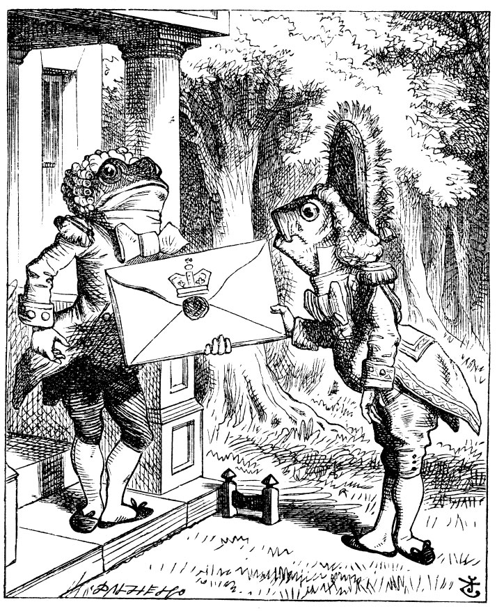
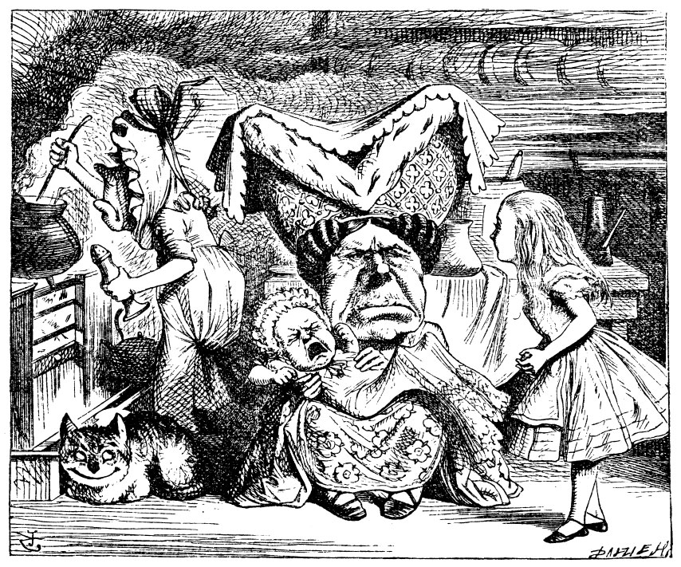
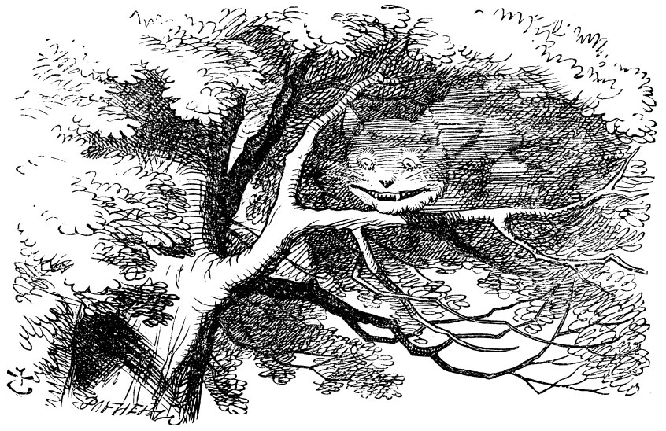

Alice bir iki dakikadır durmuş evi seyrediyor ve şimdi ne yapsam diye düşünüyordu ki, birden üniformalı bir uşak ormandan koşarak çıkageldi... (Üniformasından dolayı uşak olduğunu düşünmüştü; yoksa sadece yüzüne baksa balık derdi)... yumruklarıyla kapıya hızlı hızlı vurdu. Kapı, kurbağaya benzeyen kocaman patlak gözlü, yuvarlak yüzlü üniformalı başka bir uşak tarafından açıldı; Alice her iki uşağın da kafalarında lüle lüle pudralı perukları olduğunu fark etti. Bütün bu gördüklerinin ne olduğunu çok merak ediyordu, böylece ormandan açıklığa doğru sürünerek ilerleyip olup biteni dinlemeye koyuldu.
Balık Uşak, koltuğunun altından nerdeyse kendi boyunda kocaman bir zarf çıkarıp diğer uşağa uzatarak ciddi bir sesle “Düşes için. Kraliçe’den kroket oyununa bir davetiye,” dedi. Kurbağa Uşak da aynı ciddilikle, yalnızca sözcüklerin yerlerini değiştirerek tekrarladı: “Kraliçe’den. Düşes için kroket oyununa bir davetiye.”
Sonra ikisi de eğilerek selam verdiler, bu sırada lüleleri birbirine dolaştı.
Alice gülmekten kırılıyordu, o kadar ki kendisini duyarlar korkusuyla tekrar ormanın içine kaçmak zorunda kaldı; yeniden onları gözetlemek üzere ortaya çıktığında, Balık Adam çoktan gitmişti, öbürü de kapının yanında yere oturmuş aptal aptal gökyüzüne bakıyordu.
Alice korka korka gidip kapıyı çaldı.
“Kapıyı vurmanın hiç faydası yok,” dedi Uşak, “iki nedenden ötürü. İlki, bir kere seninle kapının aynı tarafındayız; İkincisi de içeride öyle bir gürültü kopuyor ki, kimsenin seni duymasına imkân yok.” Gerçekten de içerde öyle acayip bir gürültü patırtı vardı ki... ardı arkası kesilmeyen uluma ve hapşırmalar ve ara ara tabak ya da demlik kırılıyormuşçasına çıkan büyük şangırtılar.
“O halde,” dedi Alice, “lütfen söyler misiniz, nasıl içeri girebilirim?”

“Kapıyı çalmanın anlamı olabilirdi,” diye devam etti Uşak ona aldırmaksızın, “eğer ki kapı aramızda olsaydı. Örneğin, sen içerde olsaydın, kapıyı vurabilirdin, ben de seni dışarı çıkarırdım.” Uşak onunla konuşurken hep gökyüzüne bakıyordu, Alice’e göre bu davranış nezaketsizlik demekti. “Ama belki de başka türlüsü elinden gelmiyordur,” dedi kendi kendine, “gözleri başının tepesine o kadar yakın ki. Yine de soruları yanıtlayabilir.” Ardından yüksek sesle tekrar sordu: “İçeri nasıl girebilirim?”
“Burada oturacağım,” dedi Uşak, “yarına kadar.”
Tam o anda evin kapısı açıldı ve kocaman bir tabak havada kayarcasına Uşak’ın kafasına doğru gelerek burnunu sıyırıp geçti ve arkasındaki ağaçlardan birine çarparak parçalandı.
“... ya da belki de öbür güne,” diye nerdeyse aynı tonla, sanki hiçbir şey olmamışçasına devam etti Uşak.
Alice, sesini iyice yükselterek, “İçeri nasıl gireceğim?” diye sordu yeniden.
“Ondan önce şu soru geliyor, anlarsın ya,” dedi Uşak, “içeri girecek misin ki?”
Kesinlikle doğru söylüyordu; sadece bunun söylenmesi Ali-ce’in hiç hoşuna gitmemişti. “Gerçekten korkunç,” diye homurdandı kendi kendine, “bu yaratıkların şu tartışma şekilleri yok mu ya. insanı çıldırtmaya yeter!”
Uşak, sözlerini farklı farklı şekillerde tekrarlamak için fırsat çıktığını görmüş gibiydi. “Burada oturacağım, zaman zaman, günlerce ve günlerce.”
“Peki ama ben ne yapacağım,” dedi Alice.
“Ne istersen onu,” dedi Uşak ve başladı ıslık çalmaya.
“Öf bununla konuşmak boşuna,” dedi Alice umutsuzluk içinde. “Aptalın teki!” Kapıyı açıp içeri girdi.
Kapı, baştan sona dumanla kaplı büyükçe bir mutfağa açılıyordu. Düşes, ortada üçayaklı bir tabureye oturmuş bir bebek emziriyordu; aşçı, ocağın üzerine eğilmiş içinde herhalde çorba kaynayan bir kazanı karıştırıyordu.

“Çorbaya da amma çok biber koymuşlar!” dedi Alice kendi kendine, hapşırığını tutmaya çalışarak.
Havada kesinlikle haddinden fazla biber vardı. Düşes bile yer yer hapşırıyordu; bebek ise ardı arkası kesilmeden ya hapşırıyor, ya da feryat ediyordu. Mutfakta hapşırmayanlardan biri aşçı, diğeri de ocağın yanında oturup, sırıtmaktan ağzı kulaklarına varan kocaman bir kediydi.
“Efendim, lütfedip söyler misiniz,” dedi Alice çekine çekine, öyle ya konuşmayı ilk önce kendisinin başlatmasının nazik bir davranış olup olmadığından pek de emin değildi, “Neden kediniz böyle sırıtıyor?”
“O bir Cheshire Kedisi,” dedi Düşes, “o yüzden. Domuz!”
Bu son sözcüğü öyle ani bir hiddetle söyledi ki, Alice yerinden sıçradı; fakat bunun kendisine değil de, bebeğe söylendiğini anlayınca, cesaretini toplayıp sözlerine yeniden devam etti...
“Cheshire Kedilerinin hep böyle sırıttıklarını bilmiyordum; aslında kedilerin sırıtabileceklerini pek duymamıştım.”
“Hepsi sırıtabilir,” dedi Düşes, “ve çoğu da sırıtır.”
“Sırttanım hiç görmedim,” dedi Alice kibarca; sonunda bir sohbete katılmış olmaktan pek memnundu.
“Pek bir şey bilmiyormuşsun,” dedi Düşes; “bu bir gerçek.” Alice bu sözlerdeki havadan hiç hoşlanmayınca başka konular ortaya atmanın iyi olacağını düşündü. O bir konu bulmaya çalışırken, aşçı çorba kazanını ateşten indirip, eline ne geçerse Düşes ile bebeğe fırlatmaya başladı... önce maşa ve kürek geldi; onları tava, tabak, sahan yağmuru izledi. Düşes, bunlar kendisine çarpsa bile hiç aldırmıyordu; bebek de zaten öyle bir feryat ediyordu ki, bu darbelerin onu incitip incitmediğini kestirmek neredeyse imkânsızdı.
“Ah, lütfen, dikkat etsenize,” diye bağırdı Alice, olduğu yerde dehşet içinde zıplayıp dururken. Koskocaman bir tava bebeğin burnunu sıyırıp geçerek görevini nerdeyse başarıyla yerine getirecekken, “A işte, bebeğin o güzelim burnu gidiyor,” dedi.
“Eğer herkes kendi işine baksaydı,” dedi Düşes boğuk bir hırlamayla, “dünya şimdikinden daha hızlı dönerdi.”
“Ama bu hiç iyi bir şey olmazdı,” dedi Alice, bilgisini birazcık ortaya koyma fırsatını yakalamış olmaktan oldukça mutluydu. “Bir düşünün, bunun gece ve gündüz üzerinde nasıl bir etkisi olurdu! Biliyorsunuz, dünya yirmi dört saatte döner, kendi ekseni etrafında.”
“Ensesi demişken,” dedi Düşes, “Uçurun şunun kellesini enseden!”
Alice, aşçının Düşes’in söylediklerine göre davranıp davranmayacağı konusunda oldukça endişelenerek dönüp ona baktı; fakat aşçı hummalı hummalı çorbayı karıştırıyor, sanki onu hiç dinlemiyordu; böylece Alice'e yeniden cesaret geldi ve sözlerine devam etti: “Sanırım yirmi dört saatti, yoksa on iki miydi? Ben...”
“Öf, sıkma canımı,” dedi Düşes, “oldum olası rakamlara tahammül edemem!” Sonra, yeniden çocuğunu emzirmeye başladı; ona ninniye benzer bir şey söylüyor ve her dizenin sonunda çocuğu bütün hışmıyla sallıyordu:
“Paylayın küçük oğlunuzu
Dövün onu hapşırdığında
Attırmaktır amacı kafanızın tasını
Çünkü aklı hep muziplikte”
KORO
(Koroya bebek ve aşçı da katılır.)
“Eeee! Eeee! Eeee!”
Düşes, şarkının ikinci bölümünü söylerken, bebeği deli gibi bir aşağı bir yukarı atıp duruyordu; zavallı minik şey öyle bir feryat ediyordu ki, Alice ninninin sözlerini zar zor duyabiliyordu...
“Bağırırım çağırırım oğluma
Döverim onu hapşırdığında
Bilirim bayılır acı bibere
Bir kez canı istediğinde”
KORO
“Eeee! Eeee! Eeee!”
Düşes, bebeği Alice’e hızla fırlatarak, “Al işte, istersen biraz da sen bak!” dedi. “Gidip Kraliçe’yle kroket oynamak için hazırlanayım,” deyip hızla odadan çıktı. Aşçı, Düşes’in ardından tavayı fırlattı, ama isabet ettiremedi.
Acayip şekilli ufak bir yaratık olan bebeği Alice güçbela yakalayabildi; kollarıyla bacaklarını öyle bir uzatmıştı ki, Alice, “tıpkı bir denizyıldızı,” diye düşündü. Onu yakaladığı sırada, zavallı küçük şey tıpkı bir buhar makinesi gibi soluyup, durmadan iki büklüm oluyor, sonra yeniden geriniyordu; bu yüzden Alice onu düzgünce tutabilmek için bir iki dakika boyunca akla karayı seçti.
Bebeği doğru dürüst nasıl tutacağının bir yolunu bulur bulmaz (onu, önce düğüm yapar gibi bükmüş, sonra da kendini bir daha çözemesin diye sağ kulağıyla sol ayağını sıkı sıkı tutmuştu), onu alıp açık havaya çıkardı. “Bu çocuğu yanımda götürmesem,” diye düşündü “kesin bir iki gün içinde onu öldürürler. Onu burada bırakmak cinayet değil de nedir ki?” Bu son sözleri yüksek sesle söylemişti; o küçük şey de yanıt olarak bir homurtu kopardı (bu arada hapşırmayı kesmişti.). “Homurdanma,” dedi Alice, “bu, duygularını ifade etmenin hiç de doğru bir yolu değil.”
Bebek yeniden homurdanınca Alice acaba ne oldu diye merakla bebeğin yüzüne baktı. Hiç kuşku yoktu ki, burnu gerçek bir insan burnundan çok, bir hayvanınki gibi fazlasıyla kalkıktı; gözleri de bir bebeğin gözlerine göre aşırı küçüktü: Alice, bu şeyin görüntüsünden pek hoşlanmamıştı. “Çok ağlıyordu ya, belki de ondandır,” diye düşündü ve yaş var mı yok mu diye yeniden dikkatlice gözlerine baktı.
Yok, gözlerinde ne yaş vardı ne bir şey. “Canım bak, eğer domuza dönüşüyorsan,” dedi Alice ciddi bir edayla, “artık seninle işim olmaz. Anlaşıldı mı?” Zavallı küçük şey yeniden hıçkırdı (ya da homurdandı, tam olarak hangisi olduğunu söylemek imkânsızdı), bir süre ikisi de sessiz kaldılar.
Alice tam, “Eve vardığımda bu yaratıkla ne yapacağım?” diye düşünmeye başlamıştı ki, küçük şey yeniden öyle bir homurdandı ki, Alice, birden dehşetle yüzüne baktı. Bu sefer hiçbir şüpheye yer yoktu; bu yaratık yüzde yüz domuzdu, onu kucağında daha fazla taşıması çok saçma olacaktı.
Böylece, küçük yaratığı yere bıraktı; onun sessizce koşarak koruya girdiğini görünce oldukça rahatladı. “Büyüyünce dehşet çirkin bir çocuk olurdu,” dedi kendi kendine, “ama bir domuz olarak, sanırım güzel olacak.” Sonra da, tanıdığı çocuklardan domuzluğa yakışanları getirdi gözünün önüne; “Keşke insan bunları nasıl domuza dönüştürebileceğini bilebilse,” diye kendi kendine konuştuğu sırada iki üç metre ötede bir ağaç dalında oturan Cheshire Kedisi’ni görünce irkildi.
Kedi Alice’i görünce, sırıtmakla yetindi. İyi huylu bir kediymiş gibi geldi ona: Ne var ki, çok uzun tırnakları ve bir sürü dişi vardı, bu yüzden ona karşı saygılı davranması gerektiğini düşündü.
‘‘Cheshire Pisisi,” diye başladı konuşmaya çekine çekine, bu hitaptan hoşlanıp hoşlanmadığından pek emin değildi. Neyse ki, kedinin yüzündeki sırıtış biraz daha artmıştı. “Tamam o zaman, demek ki durumdan hoşnut,” diye düşündü ve devam etti. “Lütfen söyler misiniz, buradan ne tarafa doğru gitmeliyim?”
“Bu daha çok nereye varmak istediğine bağlı,” dedi Kedi.
“Neresi olursa olsun...” dedi Alice.
“Öyleyse ne tarafa doğru gideceğinin önemi yok,” dedi Kedi.
“Bir yerlere varayım da, gerisi önemli değil,” diye ekledi Alice, ne istediğini daha iyi anlatabilmek için.
“Kesin, bir yerlere varırsın,” dedi Kedi, “tabii yeterince yürürsen.”
Alice, bu sözün doğruluğunu yadsıyamayacağını görünce, başka bir soru sormayı denedi. “Buralarda nasıl insanlar yaşar?”
“Şu tarafta,” dedi Kedi, sağ pençesiyle bir yarım daire çizerek, “Şapkacı yaşar. Şu tarafta da,” dedi, diğer pençesiyle de aynı hareketi yaparak, “MartTavşan’ı yaşar, istediğine git, nasılsa ikisi de deli.”
“Ama ben delilerin arasına girmek istemiyorum,” dedi Alice.
“E, bu konuda elimden bir şey gelmez,” dedi Kedi. “Burada kim deli değil ki! Ben deliyim. Sen delisin.”
“Nerden biliyorsun benim deli olduğumu,” dedi Alice.
“Öyle olmalısın,” dedi Kedi, “Yoksa buralara gelmezdin.”
Bu durumun hiç de deliliğine kanıt olmadığını düşündü Alice. Yine de sözlerine devam etti. “Peki kendinizin deli olduğunu nerden biliyorsunuz?”
“Öncelikle,” dedi Kedi, “bir köpek deli değildir. Kabul mü?”
“Galiba öyle,” dedi Alice.
“O halde,” diye devam etti Kedi, “biliyorsun ki köpekler kızdıklarında hırlarlar, sevindiklerinde de kuyruklarını sallarlar. Oysa, ben sevindiğimde hırlarım, kızdığımda da kuyruğumu sallarım. Demek ki ben deliyim.”
“O hırlamak değil, mırlamaktır,” dedi Alice.
“Nasıl istersen öyle de,” dedi Kedi. “Bugün Kraliçe’yle kroket oynuyor musun?”
“Çok isterdim,” dedi Alice, “ama daha davet edilmedim.”
“Orda beni görürsün,” dedi Kedi ve ortadan kayboldu.
Alice, buna pek de şaşırmadı, tuhaf şeylerin olmasına öyle alışmıştı ki. Kedi’nin kaybolduğu yere öylece bakakalmışken, Kedi birden yeniden ortaya çıktı.
“Ha bu arada bebek ne oldu,” dedi. “Az daha sormayı unutuyordum.”
“Domuza dönüştü,” diye yanıtladı Alice sakin sakin, sanki Kedi çok doğal bir yoldan geri gelmişçesine.
“Ben de öyle düşünmüştüm,” dedi Kedi ve yeniden ortadan kayboldu.
Alice, Kedi’yi bir kez daha görebilirim umuduyla bir süre bekledi, ama Kedi bir daha görünmedi; bir iki dakika sonra Mart Tav-şanı’nın yaşadığı söylenilen yöne doğru yürümeye koyuldu. “Daha önce, şapkacılar görmüştüm,” dedi Alice kendi kendine. “Mart Tavşanı çok daha ilginç olacak, hem mayıs ayında olduğumuzdan belki daha delirmemiştir... en azından martta olduğu kadar değildir.” Alice, bunları söylediği sırada dönüp bir yukarıya baktı, Kedi yine orada bir ağacın dalına tünemişti.
“Domuz mu demiştin, yoksa muz mu?”
“Domuz,” diye yanıtladı Alice; “ama böyle ikide birde kaybolup çıkmasanız ortaya. İnsanın başı dönüyor.”
“Peki,” dedi Kedi, bu sefer yavaş yavaş kayboldu; kuyruğunun ucundan başladı kaybolmaya, en son sırıtışı silindi... kendisi tamamen gözden kaybolduktan sonra, sırıtışı bir süre daha kaldı.

“Hayret! Sırıtmayan kedi görmüştüm pek çok kez,” diye düşündü Alice, “ama kedisiz bir sırıtma! Bu ömrümde gördüğüm en tuhaf şey!”
Öyle pek fazla da bir yol almamıştı ki, Mart Tavşanı’nın evi çıkıverdi karşısına; bu ev onun olmalı diye düşündü, çünkü bacalar kulak biçimindeydi, çatısı da kürkle kaplıydı. Öyle büyük bir evdi ki, sol elindeki mantardan bir iki lokma almadan eve yaklaşmaya cesaret edemedi; boyu artık yaklaşık altmış santimetre olmuştu. Yine de kendi kendine, “Ya delirmişse! Keşke Şapkacı’nın evine gitseydim,” demeden edemedi ve ürkek ürkek eve doğru yürümeye devam etti.